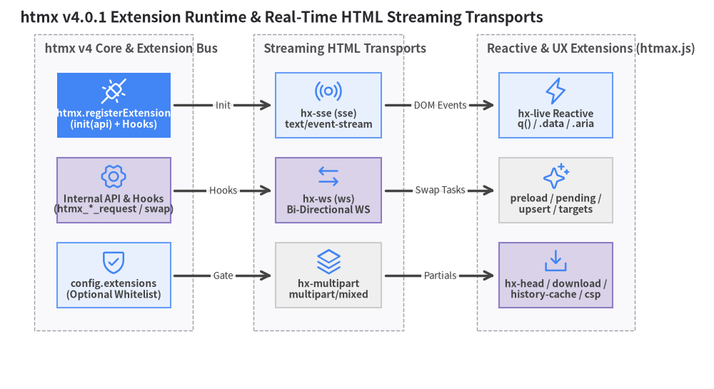
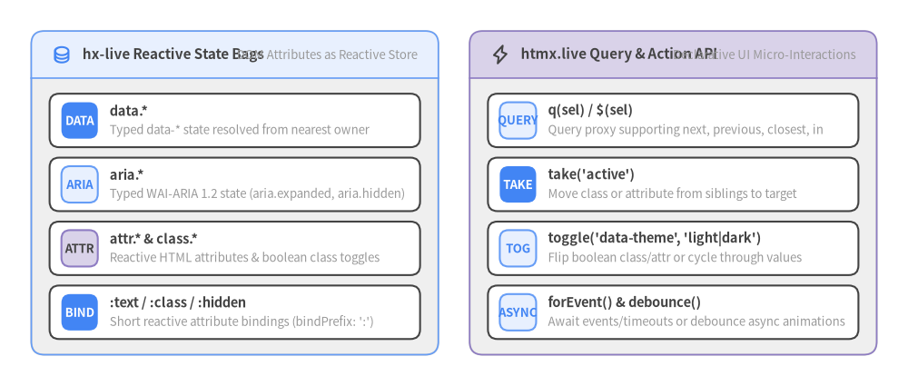

6. Extensions & Streaming
htmx v4.0.1 features a streamlined event-hook extension architecture (htmx.registerExtension) and ships 17 official extensions covering real-time HTML streaming (hx-sse, hx-ws, hx-multipart), reactive DOM scripting (hx-live), UX enhancements (hx-preload, hx-pending, hx-browser-indicator, hx-targets, hx-upsert, hx-head, hx-download), and strict CSP security (hx-csp).

Source Code
from drawlib import canvas
from drawlib.diagrams.architecture import ArchitectureDiagram, Node, NodeGroup, PhosphorIcon
from drawlib.styles import Styles
canvas.clear()
canvas.setup(width=176, height=96)
d = ArchitectureDiagram(
node_style=Styles.Primary,
node_text_style=Styles.DarkBold.patch(text_size=10.0),
edge_style=Styles.DarkBold,
edge_text_style=Styles.Dark.patch(text_size=9.5),
node_card_style=Styles.Neutral,
title="htmx v4.0.1 Extension Runtime & Real-Time HTML Streaming Transports",
)
core_grp = d.add(NodeGroup(title="htmx v4 Core & Extension Bus", padding=5.5), xy=(6.0, 10.0))
reg = core_grp.add(
Node("htmx.registerExtension\n(init(api) + Hooks)", width=28, height=16, icon=PhosphorIcon.PLUGS_CONNECTED, icon_size=7.0, style=Styles.White, card_style=Styles.PrimaryFlat, text_style=Styles.WhiteBold.patch(text_size=10.0)),
xy=(18.0, 56.0),
)
api_bus = core_grp.add(
Node("Internal API & Hooks\n(htmx_*_request / swap)", width=28, height=16, icon=PhosphorIcon.GEAR_SIX, icon_size=7.0, card_style=Styles.SecondaryNeutral),
xy=(18.0, 35.0),
)
whitelist = core_grp.add(
Node("config.extensions\n(Optional Whitelist)", width=28, height=16, icon=PhosphorIcon.SHIELD_CHECK, icon_size=7.0, card_style=Styles.PrimaryNeutral),
xy=(18.0, 14.0),
)
stream_grp = d.add(NodeGroup(title="Streaming HTML Transports", padding=5.5), xy=(60.0, 10.0))
sse = stream_grp.add(
Node("hx-sse (sse)\ntext/event-stream", width=26, height=16, icon=PhosphorIcon.BROADCAST, icon_size=7.0, card_style=Styles.PrimaryNeutral),
xy=(17.0, 56.0),
)
ws = stream_grp.add(
Node("hx-ws (ws)\nBi-Directional WS", width=26, height=16, icon=PhosphorIcon.ARROWS_LEFT_RIGHT, icon_size=7.0, card_style=Styles.SecondaryNeutral),
xy=(17.0, 35.0),
)
multipart = stream_grp.add(
Node("hx-multipart\nmultipart/mixed", width=26, height=16, icon=PhosphorIcon.STACK, icon_size=7.0),
xy=(17.0, 14.0),
)
ux_grp = d.add(NodeGroup(title="Reactive & UX Extensions (htmax.js)", padding=5.5), xy=(114.0, 10.0))
live = ux_grp.add(
Node("hx-live Reactive\nq() / .data / .aria", width=28, height=16, icon=PhosphorIcon.LIGHTNING, icon_size=7.0, card_style=Styles.PrimaryNeutral),
xy=(19.0, 56.0),
)
ux_exts = ux_grp.add(
Node("preload / pending /\nupsert / targets", width=28, height=16, icon=PhosphorIcon.SPARKLE, icon_size=7.0),
xy=(19.0, 35.0),
)
head_dl = ux_grp.add(
Node("hx-head / download /\nhistory-cache / csp", width=28, height=16, icon=PhosphorIcon.DOWNLOAD_SIMPLE, icon_size=7.0, card_style=Styles.SecondaryNeutral),
xy=(19.0, 14.0),
)
d.connect(reg, sse, label="Init", padding=1.0)
d.connect(api_bus, ws, label="Hooks", padding=1.0)
d.connect(whitelist, multipart, label="Gate", padding=1.0)
d.connect(sse, live, label="DOM Events", padding=1.0)
d.connect(ws, ux_exts, label="Swap Tasks", padding=1.0)
d.connect(multipart, head_dl, label="Partials", padding=1.0)
d.draw(xy=(4.0, 4.0))
canvas.save()
6.1 v4 Extension Architecture (htmx.registerExtension)
In htmx 2, extensions required adding hx-ext="name" to HTML elements and writing a monolithic onEvent(name, evt) callback. In htmx v4.0.1:
- Zero
hx-extBoilerplate: Simply include<script src="hx-preload.js"></script>afterhtmx.js. The extension activates page-wide automatically. - Optional Whitelist (
htmx.config.extensions): Ifhtmx.config.extensionsis empty ("", the default), all loaded extensions register. If set (e.g.,<meta name="htmx-config" content='extensions:"preload, sse, hx-live"'>), only extensions whose registration name appears in the list are allowed to register. - Underscored Event Hooks: Any htmx event
htmx:phase:actioncan be hooked inhtmx.registerExtension(name, hooks)by replacing colons with underscores (htmx_before_request,htmx_after_swap,htmx_before_morph_node,htmx_process_<type>), plusinit(internalAPI)andhandle_swap(swapStyle, target, fragment, swapSpec).
(() => {
let api;
htmx.registerExtension('my-timing-header', {
init: (internalAPI) => {
api = internalAPI;
},
htmx_config_request: (elt, { ctx }) => {
if (!api.attributeValue(elt, 'hx-timing')) return;
ctx.request.headers['X-Request-Sent-At'] = String( performance.now() );
}
});
})();
Complete Catalog of the 17 Official Shipped Extensions
[!IMPORTANT] Note the Registers as column below:
htmx.config.extensionsmatches the name passed tohtmx.registerExtension(), which for several extensions differs from the script filename (e.g.,hx-sse.jsregisters assse, andhx-preload.jsregisters aspreload).
| Script File | Registers as | Bundled in htmax.js? |
Primary Capability |
|---|---|---|---|
hx-sse.js |
sse |
Yes | Server-Sent Events (text/event-stream) streaming HTML & event triggers |
hx-ws.js |
ws |
Yes | Bi-directional WebSocket HTML streaming and form/JSON sending |
hx-multipart.js |
hx-multipart |
No | Streams multiple HTML chunks over a single multipart/mixed HTTP response |
hx-live.js |
hx-live |
Yes | DOM-backed reactive expressions (:text, :class, q(), .data, .aria, take()) |
hx-preload.js |
preload |
Yes | Prefetches hx-get URLs on mousedown / mouseover or custom triggers |
hx-pending.js |
hx-pending |
Yes | Displays inline pending HTML inside the target while a request is in flight |
hx-browser-indicator.js |
browser-indicator |
Yes | Triggers the browser tab's native loading spinner via the Navigation API |
hx-targets.js |
hx-targets |
Yes | Swaps the same response into multiple elements matching hx-targets="<sel>" |
hx-upsert.js |
upsert |
Yes | Updates existing items by ID or inserts/sorts new items (hx-swap="upsert") |
hx-download.js |
download |
Yes | Streams file downloads (hx-swap="download", HX-Download) with progress events |
hx-history-cache.js |
history-cache |
Yes (disabled by default) | Caches and restores DOM + input/scroll state in sessionStorage on Back/Forward |
hx-alpine-compat.js |
alpine-compat |
Yes | Bridges morphing and lifecycle hooks cleanly with Alpine.js components |
hx-head.js |
hx-head |
No | Merges <head> tags, stylesheets, and <script defer> across responses |
hx-ptag.js |
ptag |
No | Per-element HX-PTag headers for 304 Not Modified conditional polling |
hx-csp.js |
hx-csp |
No | Strict CSP enforcement (hx-nonce verification, Trusted Types, safeEval) |
hx-prompt.js |
hx-prompt |
No | Restores htmx 2's hx-prompt dialog (HX-Prompt request header) |
htmx-2-compat.js |
compat |
No | Emits legacy htmx 2 camelCase events and maps legacy attributes |
6.2 Streaming HTML (hx-sse, hx-ws, hx-multipart)
Because htmx v4.0.1 is built on fetch() and ReadableStream, streaming HTML fragments over long-lived connections is a first-class pattern.
1. Server-Sent Events (hx-sse.js)
Connect to an SSE endpoint (Content-Type: text/event-stream) and swap named or unnamed events directly into the DOM:
<script src="/dist/ext/hx-sse.min.js"></script>
<!-- Connect to /events/stream and swap 'message' events into #live-feed -->
<div hx-sse="connect:/events/stream">
<div id="live-feed" hx-sse="swap:message" hx-swap="afterbegin"></div>
<!-- Or trigger a standard hx-get whenever a specific SSE event arrives -->
<div hx-get="/metrics/summary" hx-trigger="sse:metricsUpdated"></div>
</div>
2. Bi-Directional WebSockets (hx-ws.js)
Open a WebSocket connection with hx-ws="connect:/chat" and send serialized form values over the socket using hx-ws="send":
<script src="/dist/ext/hx-ws.min.js"></script>
<section hx-ws="connect:/ws/chatroom">
<div id="chat-messages"></div>
<form hx-ws="send" hx-on:htmx:ws:after:send="this.reset()">
<input type="text" name="chat_message" placeholder="Type a message..." required>
<button type="submit">Send</button>
</form>
</section>
3. Chunked HTTP Streaming (hx-multipart.js)
When a single HTTP request (such as an AI generation endpoint or a slow multi-query dashboard) wants to stream progressive HTML updates without opening a persistent SSE/WebSocket connection, the server can return Content-Type: multipart/mixed; boundary=... and stream each part as it becomes ready.
6.3 Reactive Client Scripting with hx-live
While hypermedia keeps domain state on the server, UI micro-interactions—such as toggling a drawer, syncing a character counter, cycling tab classes, or updating ARIA attributes—should happen instantaneously on the client. The official hx-live extension (htmx.live) provides a reactive, DOM-backed scripting system where the DOM itself (data-*, aria-*, attributes, and classes) is the reactive store.

Source Code
from drawlib.canvas import save, setup
from drawlib.icons import phosphor
from drawlib.smartarts import CardList, Panel
from drawlib.styles import Styles
setup(width=174, height=74)
# Left Panel: Reactive State Bags
left_panel = Panel(
"hx-live Reactive State Bags",
"DOM Attributes as Reactive Store",
style=Styles.Neutral,
header_style=Styles.PrimaryNeutral.patch(shape_line_width=1.2),
text_style=Styles.DarkBold.patch(text_size=11.0),
description_style=Styles.Muted.patch(text_size=9.5),
icon=phosphor.database,
icon_style=Styles.PrimaryBold,
header_variant="filled",
header_height=9.0,
)
left_panel.draw((6.0, 6.0), width=78.0, height=62.0, align="bottom_left")
l_xy, l_w, l_h = left_panel.get_content_box((6.0, 6.0), width=78.0, height=62.0, padding=(3.5, 3.0))
bags = CardList(
style=Styles.White,
text_style=Styles.DarkBold.patch(text_size=10.5),
description_style=Styles.Muted.patch(text_size=9.5),
badge_style=Styles.PrimaryFlat,
badge_text_style=Styles.WhiteBold.patch(text_size=9.5),
spacing=2.0,
)
bags.add("data.*", "Typed data-* state resolved from nearest owner", badge_text="DATA")
bags.add("aria.*", "Typed WAI-ARIA 1.2 state (aria.expanded, aria.hidden)", badge_text="ARIA", badge_style=Styles.PrimaryNeutral, badge_text_style=Styles.PrimaryBold.patch(text_size=9.5))
bags.add("attr.* & class.*", "Reactive HTML attributes & boolean class toggles", badge_text="ATTR", badge_style=Styles.SecondaryNeutral, badge_text_style=Styles.DarkBold.patch(text_size=9.5))
bags.add(":text / :class / :hidden", "Short reactive attribute bindings (bindPrefix: ':')", badge_text="BIND")
bags.draw(l_xy, width=l_w, height=l_h)
# Right Panel: Query & Action Utilities
right_panel = Panel(
"htmx.live Query & Action API",
"Declarative UI Micro-Interactions",
style=Styles.Neutral,
header_style=Styles.SecondaryNeutral.patch(shape_line_width=1.2),
text_style=Styles.DarkBold.patch(text_size=11.0),
description_style=Styles.Muted.patch(text_size=9.5),
icon=phosphor.lightning,
icon_style=Styles.DarkBold,
header_variant="filled",
header_height=9.0,
)
right_panel.draw((90.0, 6.0), width=78.0, height=62.0, align="bottom_left")
r_xy, r_w, r_h = right_panel.get_content_box((90.0, 6.0), width=78.0, height=62.0, padding=(3.5, 3.0))
helpers = CardList(
style=Styles.White,
text_style=Styles.DarkBold.patch(text_size=10.5),
description_style=Styles.Muted.patch(text_size=9.5),
badge_style=Styles.PrimaryNeutral,
badge_text_style=Styles.PrimaryBold.patch(text_size=9.5),
spacing=2.0,
)
helpers.add("q(sel) / $(sel)", "Query proxy supporting next, previous, closest, in", badge_text="QUERY")
helpers.add("take('active')", "Move class or attribute from siblings to target", badge_text="TAKE", badge_style=Styles.PrimaryFlat, badge_text_style=Styles.WhiteBold.patch(text_size=9.5))
helpers.add("toggle('data-theme', 'light|dark')", "Flip boolean class/attr or cycle through values", badge_text="TOG")
helpers.add("forEvent() & debounce()", "Await events/timeouts or debounce async animations", badge_text="ASYNC")
helpers.draw(r_xy, width=r_w, height=r_h)
save()
Practical hx-live Examples (data.*, aria.*, take(), toggle())
<script src="/dist/ext/hx-live.min.js"></script>
<!-- 1. Reactive Counter & Panel Toggle using data-* and :text / :hidden bindings -->
<div data-count="0" data-open="false">
<button hx-on:click="data.count++">Increment</button>
<span :text="`Count: ${data.count}`">Count: 0</span>
<button hx-on:click="data.open = !data.open"
:aria-expanded="data.open">
Toggle Details
</button>
<div :hidden="!data.open">Reactive Drawer Content</div>
</div>
<!-- 2. Tab Active Class Coordination with take() -->
<nav role="tablist" hx-target:inherited="#tab-panel">
<button role="tab" class="active" hx-get="/tabs/1" hx-on:click="take('active')">Tab 1</button>
<button role="tab" hx-get="/tabs/2" hx-on:click="take('active')">Tab 2</button>
<button role="tab" hx-get="/tabs/3" hx-on:click="take('active')">Tab 3</button>
</nav>
<div id="tab-panel"></div>
6.4 High-Impact UX Extensions (preload, pending, upsert, download, head)
<!-- 1. hx-preload: Prefetch GET response on mousedown or mouseover -->
<a href="/reports/annual" hx-get="/reports/annual" hx-target="#main" hx-preload="mousedown">
Annual Report (Instant Load)
</a>
<!-- 2. hx-pending: Display skeleton placeholder inside #results during the request -->
<button hx-get="/analytics/heavy"
hx-target="#results"
hx-pending="<div class='skeleton'>Computing analytics...</div>">
Run Query
</button>
<!-- 3. hx-upsert: Update matching IDs or insert sorted by data-score descending -->
<button hx-get="/leaderboard/latest"
hx-target="#leaderboard-list"
hx-swap="upsert key:data-score sort:desc">
Refresh Leaderboard
</button>
<!-- 4. hx-download: Stream binary file download with progress bar events -->
<button hx-get="/exports/archive.zip"
hx-swap="download"
hx-on:htmx:download:progress="q('#dl-bar').attr.value = event.detail.percent">
Download Archive
</button>
<progress id="dl-bar" max="100" value="0"></progress>